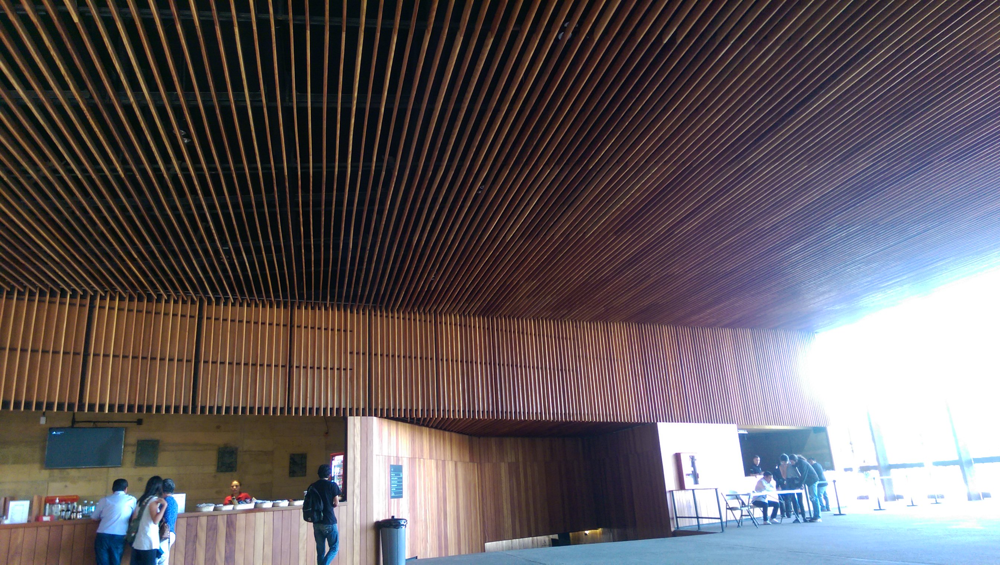
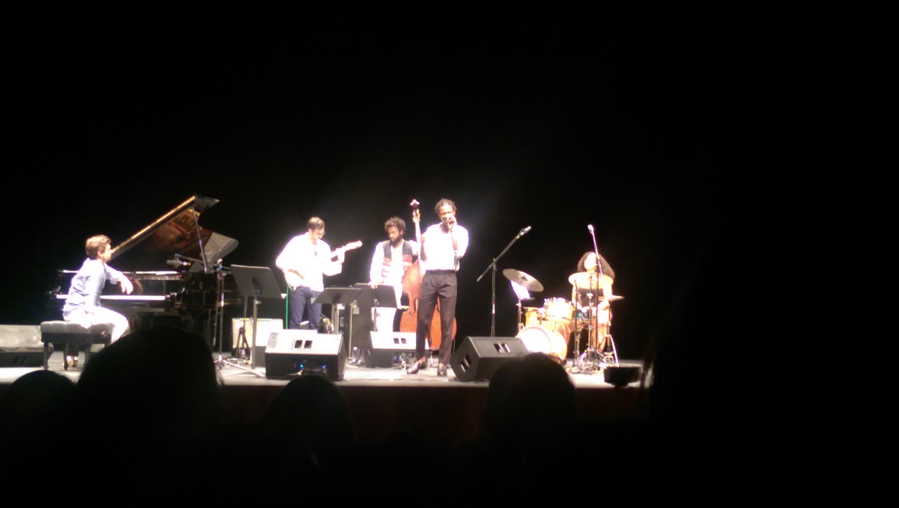

Teopanzolco – 01 (Vuyo Sotashe)
Los eventos artistico-culturales son como la “———”, son como cualquier otro evento. Cada cual libra sus batallitas por la atencion, hay rutas populares de convocatoria, como la tv, los estadios, las plazas o los multipantallas en los centros comerciales.
Tambien existen sitios donde los menos favorecidos ejercen sus reclamos de atencion como los hackmitins, las “conveciones” otakus e incluso pequeños bar-cafes intelectualoides. Pero esto no termina en este punto, incluso existen vias institucionales donde sujetos transtornados pueden mostrar las habilidades adquiridas tras miles de horas de practica en alguna curiosa habilidad, como tocar un instrumento musical, retorcer el cuerpo, plasmar imagenes abstractas o disfrasarce para interpretetar textos escritos por otros individuos con mas taras
y… finalmente, hasta el fondo de la jerarquia social, encontrariamos a los coleccionistas de amigos en facebug, los tuitstars, youtubers, podcaster y blogeros con 3 espectadores
…
otra dia y otra busqueda mas por evitar el aburrimiento
El evento, del que comento en esta ocacion sucedio hace un par de semanas. Queria comentarlo antes, por que me parecio un sitio publicitable, al que seguramente habra nuevas y diversas formas de asistir, pero la procrastinacion es poderosa.
En anteriores excursiones al centro, habia observado unos publicitarios (piramidales) para eventos musicales en el auditorio tepanzolco y en una region de este una invitacion a unas masterclass. Viendo en la caltelera de eventos culturales, anunciaban que las masters eran grautitas, ademas, con la asistencia podias ingresar al concierto, que de otra manera tiene un costo de 300 pesos
la masterclass iniciaba a las 16 y el concierto a las 19, pero antes de confiar una responsabilidad tan enorme a extraños, como lo es entretenerme, bien valdria la pena ver que tipo de musicos son los anfitriones
el protagonista era un tal Vuyo Sotashe, segun la convocatoria, el primer
vocalista masculino en llegar a los primeros lugares en la importante
Competencia Internacional de Jazz Vocal Del Instituto Thelenonious Monk de
2015
; vocalista, jazz y masculino? esto no suena muy varonil…
huuu, tienen un video del yutu
huuug, en efecto, una femina con voz melodiosa es un evento que no transgrede el muro de la aspereza de naz©ii, pero esto!? Es como un equivalente del anime incomprensible dedicado a señoritas que de ves en cuando cae en el disco duro y “como llega, se va” por resultar incomprensible, pero, una tarde de dispersion gratuita en un recinto premium, bien valdria dejar los prejuicios a un lado, aunque sea en pro de confirmarlos
y asi fue, pase a un cibercafe y por un peso imprimieron unas lineas a presentar en la entrada del auditorio; a las cuales el poli no hiso drama, ni le dio por hacer “una revicion”
ya en la “gran entrada” tenian dispuesta una mesa donde canjeaban el impreso por un formulario a llenar y luego, tras asistir a la masterclass canjearlo nuevamente por el boleto de entrada

la clase maestra, a diferencia de la del evento jazzistico anterior, no fue un compendio de consejos para mejorar como musico. En su lugar, consistio en una ligera presentacion de cada miembro del grupo
- Voyo Sotache, voz
- Chris Pattishall, piano
- Russell Hall, bajo (disfraz de Hendrix)
- Gabe Schnider, guitarra
- Savanna Harris, bateria
y despues vino una secion de preguntas varias. (Ja, ja, por que sera que los identificadores “sociales” mexico-catolicos culeros que me eligieron, en comporacion a estos nombres, carecen de inpacto?)
en la dinamica de preguntas y respuestas, aun las dudas mas comunes, desembocaron en respuestas… obvias, como naturales y sinceras, donde cada personaje exponia sus vivencias, pero sobre todo el resultado de sus reflexiones mas personales, de esas que mas o menos si se es un ser sencible se presentan.
Fue un momento de sincronia colectiva, donde por supuesto no podia faltar la pregunta (a la bataka), ¿como es ser la unica mujer del grupo (hermana femenina feminista)? con una buena respuesta que simplificada seria, “entre los musicos y mas en el circulo del jazz, si quieres que te respeten tienes que demostrar tu habilidad, y, no tocaria con alguien que no me respete como musico”, fuhahh!
Ja, algunas feminas interpretaron esa respuesta como girl powa! kiah, que tiernas…
pero la pregunta (respuesta) que mas me sorprendio fue el por que el jazz no era popular, (casi como si un GNUsero, preguntara por que el Ñu no es popular (kiah, que tiernos)), cuya respuesta ya olvide, estaba formada por 4 puntos, y uno era sobre el acceso y creo que otra sobre la academia. Jo, la proxima vez que alguien diga algo interesante y poco habitual lo anotare.
en fin, termino la clase (una asistencia de aprox. 35 personas) y restaba una hora para que diera inicio el concierto. Tenia sed y algo de hambre, pero pocas ganas de salir en busca de viveres. Ya que el evento fue cortesia del estado, gaste 50 pesitos (no sin sufrimento) en dos bebidas en el propio expendio del resinto
termino el receso y fuimos entrando a donde anteriormente sucedio la master. Los que pagaron su boleto, tenian acceso a las 5 filas mas proximas al escenario, y los demas de hay, hacia atras. Que todo sea dicho, eran las que contaban con mejor vista y comodidad para no tener que forzar el cuello a ver hacia arriba.

(las luces iluminaban un webo el escenario, casi me quedo ciego)
al inicio del acto musical, como que me arrepentia de quedarme a verlo, no tenia nahhhh de “asperesa” y el audio estaba en mono y desbalanceado hacia la izquierda. Pese a la anciedad por escapar, ya por la 4 rola el audio fue adquierendo mejor calidad y las pistas iban mejorando o quiza fui entrando en la tematica ambiental ligera.
Pero no todo recaia en el vocalista. Cada intrumento tenia su momento, tambien la guitarra tocaba muletillas rockerosas, el piano lanzo unos movimientos salvajes y veloces, la bateria con ritmos militares y el bajo, pues el bajo iba vestido de hendrix!

ya para el final el publico estaba a tono, yo esaba a tono y todo termino chido, el evento fue un gran expectaculo, yo contento y el poli mientras salia (yo y un monton de gente mas, el auditorio estaba casi lleno), me preguntaba, que, que pedo con el jazzzzzzzz